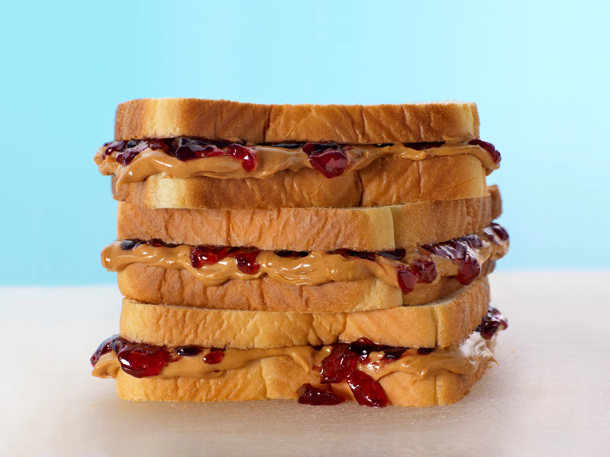

PB-J
DESCRIPTION
You are hungry and in need of a meal. In your pantry, you have peanut butter, jelly, and bread. You are not sure how to combine these ingredients to make a sandwich, Breathe! I got you!
Materials/Ingredients
- Loaf of bread (sliced)
- butter knife.
- 1 jar of Peanut Butter. (HBHM)
- 1 jar of preferred Jelly.
- paper towel.(for the mess)
STEPS
- Take a slice of bread
- Open the jar of peanut butter by twisting the lid counter clockwise
- Pick up a knife by the handle
- Insert the knife into the jar of peanut butter
- Withdraw the knife from the jar of peanut butter and run it across the slice of bread
- Take a second slice of bread
- Repeat steps 2-5 with the second slice of bread and the jar of jelly.
- Press the two slices of bread together such that the peanut butter and jelly meet
BOOM! THERE YOU HAVE IT! A DELICIOUS MASTERPIECE! ENJOY!
Return to top of page Main Page.